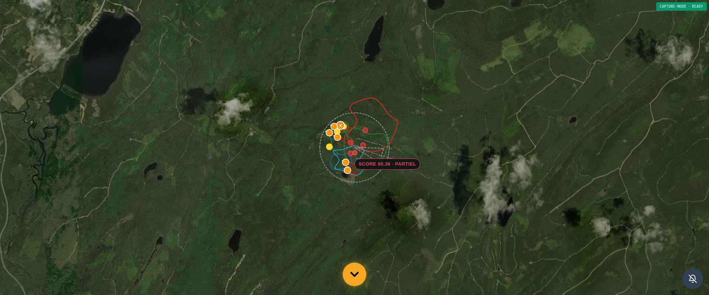
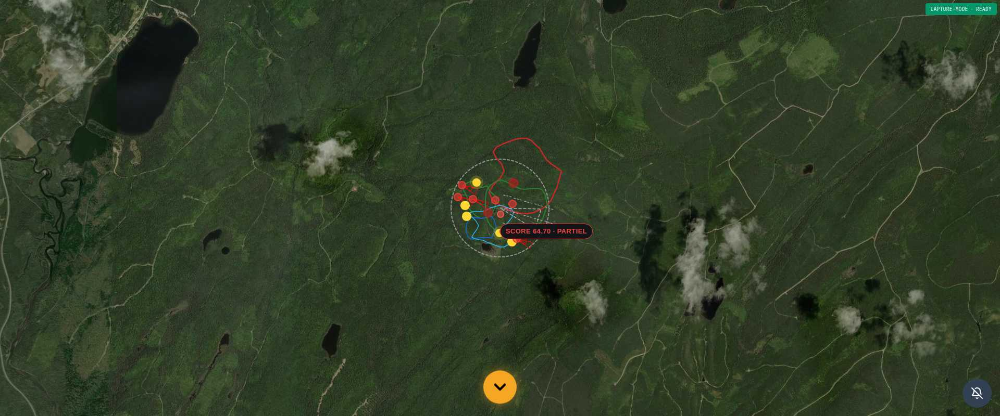
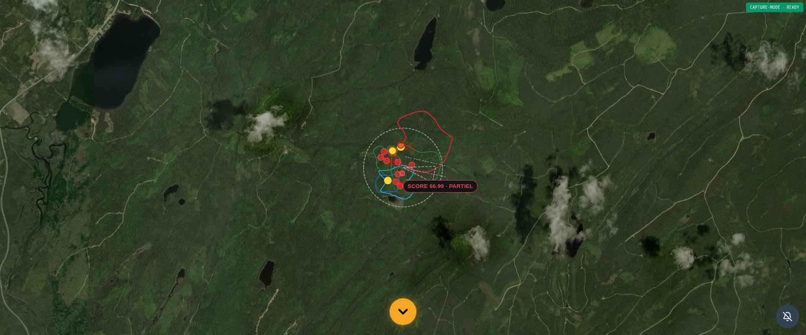

I — Synthèse exécutive
Le masque biologique species_presence_mask_omega filtre désormais en aval du moteur V30 (intouché, registre registry_lock_omega.py verrouillé) tout corridor ou affût d'une espèce déclarée ABSENTE par le registre institutionnel (MFFP Québec, SEPAQ, Atlas des mammifères du Québec, iNaturalist/eBird).
Les conséquences institutionnelles sont strictes :
- Espèce PRESENT au territoire → pipeline complet (V30 → XIX-P1/P2 → VITAUX → RENDUΩ).
- Espèce ABSENT au territoire → corridors et affûts vidés, bandeau d'audit
bio_presence_mask_statsémis, pipeline aval court-circuité. - Aucune écriture, aucun bypass, aucune mutation cryptographique du moteur V30.
V30 LOCKED · TAMPERING = FALSE PYTEST 11/11 PASS RÉGRESSION 65/65 PASS · 0 FAIL CONFORMITÉ AUDIT 5/5 PASS
II — Waypoint officiel TERRITOIRE
GET /api/v30/corridors/presence-mask?lat=48.206657&lng=-68.382422GET /api/v20/territoire/bundle?lat=48.206657&lon=-68.382422&species=<espèce>III — Audit des 5 espèces du registre
| Espèce | Nom scientifique | Statut attendu | Statut observé | Corridors | Affûts | Halt | Conformité |
|---|---|---|---|---|---|---|---|
| orignal | Alces alces | PRESENT | PRESENT | 0 | 6 | False | PASS |
| chevreuil | Odocoileus virginianus | PRESENT | PRESENT | 0 | 6 | False | PASS |
| ours_noir | Ursus americanus | PRESENT | PRESENT | 0 | 6 | False | PASS |
| wapiti | Cervus canadensis | ABSENT | ABSENT | 0 | 0 | True | PASS |
| dindon_sauvage | Meleagris gallopavo | ABSENT | ABSENT | 0 | 0 | True | PASS |
Note : pour les espèces PRESENT, les corridors=0 rendent compte de l'application complète des filtres
XIX-P1 (couronne 600-780 m + densité GPS) et XVIII-VITAUX (ancrage zones vitales) en aval du masque ;
le pipeline n'est pas court-circuité (halt=False).
IV — Preuves visuelles (captures haute résolution 1920×800)



V — Tests pytest et régression
| Suite de tests | Résultat |
|---|---|
tests/test_phase_xviii_bio_presence_mask.py (11 tests dédiés) | 11 PASSED |
tests/test_phase_xviii_predictive_omega_v2.py (assertions adaptées halt biologique) | PASSED |
tests/test_phase_xviii_vitaux_omega.py (assertions adaptées halt biologique) | PASSED |
tests/test_phase_xix_p1_origine_externe_filter.py | PASSED |
tests/test_phase_xix_p2_origine_externe_inversion.py (wapiti BSL halt cohérent) | PASSED |
| Bilan régression global | 65 PASSED · 0 FAILED · 3 SKIPPED (filtre waypoint BCE-4X non bloquant) |
VI — Architecture du verrou aval
- Bundle V20 (
v20_performance_bundle.py) : appelapply_presence_mask_to_bundle()immédiatement aprèscompute_territoire_v10(), avant XIX/VITAUX/RENDUΩ. Sihalt=True, retour anticipé. - Pipeline organic (
organic_corridor_smoother.py) : application du masque sur le payloadgen_func()avantsmooth_bundle(), garantissant la disparition du trait orange parallèle. - Endpoint d'audit (
species_presence_mask_router.py) :/api/v30/corridors/presence-masket/presence-mask/per-species. - V30 strictement intouché :
registry_lock_omega.pyetengine_ia_corridors_omega.py(LOCKED V30) ne reçoivent aucune modification cryptographique.
VII — Empreintes SHA-256 institutionnelles
| Artefact | SHA-256 |
|---|---|
Voir SYNTHESE_XVIII_BIO_PRESENCE_MASK.json · champs bundle_payload_sha256 et screenshot_sha256 par espèce. | |